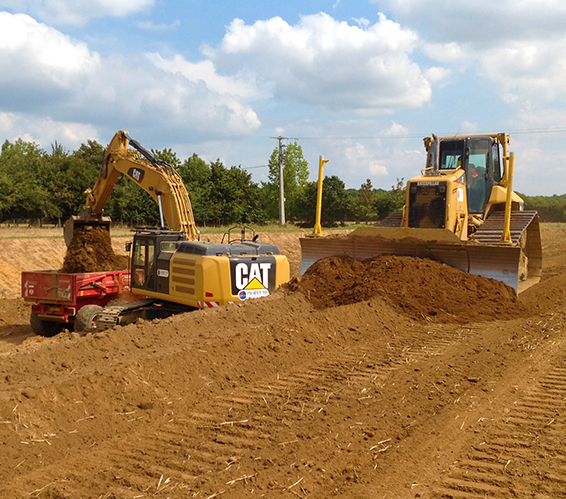

Spécialisée dans la pose de canalisations de réseaux d’assainissement des eaux usées et des eaux pluviales, OUEST TP vous apportera des solutions complètes et adaptées à vos projets d'extension, renouvellement, modernisation ou maintenance de réseaux.
Pour assurer l’alimentation en eau potable, nos équipes spécialisées sont en mesure de répondre à des projets variés de manière efficiente.
Nous intervenons en milieux urbains et zones rurales sur divers travaux.
En France seulement 3% des travaux de canalisation se font en utilisant la technique du « sans tranchées ».
Ouest TP, grâce à son personnel qualifié proposent des solutions sans tranchée, modernes et économiques, qui atténuent les nuisances des chantiers. En plus d’être une démarche innovante, c’est une vraie démarche environnementale.
OUEST TP répond de manière adaptée à tous vos besoins de terrassements. Notre équipe spécialisée et nos moyens matériels vous accompagnerons dans l’aménagement, la création ou la modification de terrains.
